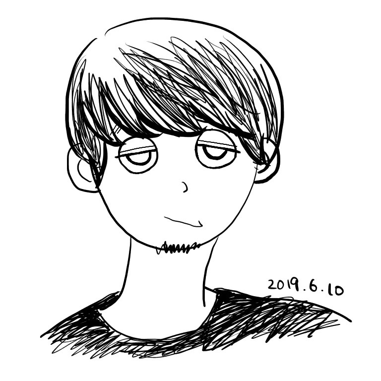

Kousuke Masuda
freee で UX Designer をしています
freee で UX Designer をしています
freee 2018.4 -
クラウド会計ソフトのUX/UIデザイン、リサーチを担当
U’eyes Design 2014.4 - 2018.3
Webサイトや組み込みシステムのリサーチ、デザイン
ユーザーリサーチに特化したUXデザイナー
大学院で心理学・人間工学を学ぶ中で、「リサーチを通してプロダクトづくりに関わり、世の中をより良くしたい」と考え、UXの考え方に出会う。
新卒でUXデザインの制作会社に入社。スマートフォンアプリの探索的リサーチや車載機器の検証型リサーチのプロジェクトなど、多数のリサーチプロジェクトを経験。
2018年4月より、freee株式会社に入社。クラウド会計ソフトfreeeのUXデザイン、リサーチを担当。2019年7月よりリサーチ組織立ち上げメンバーとして、社内のユーザーリサーチの普及に注力。
個人事業主として、ユーザーリサーチの業務委託やリサーチのレクチャーの活動も行っている。
機能ではなく
ユーザー体験から発想する
リサーチの問いから
インサイトを見つけ出す
リサーチにより
仮説を検証する